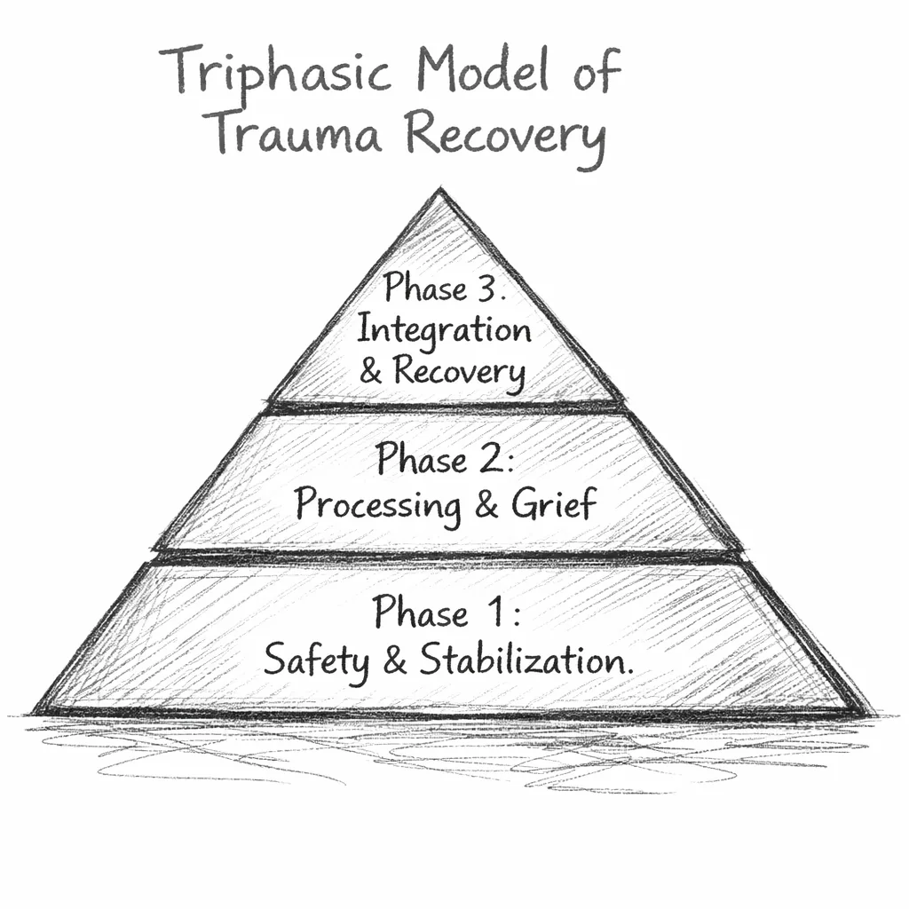

In recovery spaces, I kept seeing the same pattern.
Nearly everyone I met — hundreds, maybe thousands of people over the years, side by side in active addiction or standing in the same treatment lines — carried heartbreaking stories about their life in addiction. But underneath, almost without exception, were even more painful accounts of early adversity. And when someone insisted they had "no trauma"? They almost always opened up later — once they finally felt safe enough to do so.
And yet the systems built to treat addiction and the science built to heal trauma rarely speak to each other. Most addiction programs in Alberta do a genuine job with stabilization, structure, and community — and many proudly identify as "trauma-informed." But trauma-informed care, as it currently exists, is designed to reduce harm — not to treat the trauma driving the addiction in the first place.
The irony runs deep. Alberta already draws on Judith Herman's work — safety, trust, collaboration — as foundational principles. Staff are trained in trauma awareness. They work hard. They care. They genuinely try to create environments that don't retraumatize people who are already barely holding together.
The system doesn't stop short because anyone is indifferent to suffering. It stops short because the model was never structurally built to carry people through the later phases of trauma recovery. It was designed to stabilize addiction safely — and it does that. What it doesn't do — what it was never designed to do — is support the full arc of trauma integration that durable recovery actually requires.

In effect, we adopted the opening chapter — establishing safety — and treated it as the whole book. The result is a system that can stabilize people and prevent immediate harm, but routinely cannot carry them into the deeper, lasting recovery they came looking for.
If we already understand the importance of safety — and we already recognize the central role of trauma — why not build the pathway that actually carries people all the way through?
Less than 5–10% of this material was taught to me in any program I attended. I had to find the rest on my own — and what I found was infinitely more useful than anything the system gave me.
Before anything else, I want to be clear: treatment centers are not failing out of apathy or incompetence. Far from it. They provide structure, stability, routine, safety, community, medication support, detox monitoring, peer connection, accountability, and a break from the chaos that has often been the only environment someone has known for years. For many of us, treatment represented the first genuinely safe environment we had been in — sometimes in our entire adult lives. That matters. It's real. It saved lives. Mine included.
Stabilization isn't the problem. It's the ceiling. Most treatment programs are excellent at getting people out of crisis. Few are equipped to take them any further.
After stabilization, people are often told to "work the program," "stay honest," "stay humble," "surrender." And those principles have real value — I'm not dismissing them. But they are not sufficient for someone whose entire nervous system was shaped by trauma before they ever picked up. You can't white-knuckle your way into healing developmental wounds. You can't cognitively override a physiology built for survival. And you can't recover from trauma using tools that were designed for addiction alone — any more than you can treat a broken leg with medication for the pain and call it healed.
This is the missing middle step — what I call Stage 1.5: Trauma Literacy. The bridge between stabilization and trauma processing. Without it, people leave treatment with coping skills and slogans and then re-enter the exact nervous system that drove the addiction in the first place — with no framework for understanding why it works the way it does or what to do about it. It's not a failure of character. It's a failure of preparation — and preparation is something a system can actually provide.
Stage 1.5 gives people the education they were never offered: how the nervous system works, why triggers happen, what trauma responses actually look like in a body, how childhood patterns show up in adult relationships and adult choices, and why addiction isn't a moral or spiritual failure — it's a survival adaptation that made complete sense given what the nervous system was working with. When people genuinely understand this — not intellectually, but in a way that lands — something shifts. Shame collapses. Clarity replaces confusion. And for the first time, recovery stops feeling like a test of willpower and starts feeling like something learnable.
When treatment offers stabilization and understanding, people finally have what they need to move into Stage 2 — the trauma work that actually rewires the system. Without this middle step, we send people back into their lives better rested and more motivated, but still carrying everything that brought them in. And then we act surprised when they weren't ready.
The conflict between the will to deny horrible events and the will to proclaim them aloud is the central dialectic of psychological trauma.
— Judith Lewis Herman, Trauma and Recovery: The Aftermath of Violence - From Domestic Abuse to Political Terror
Restore physiological and behavioural stability. Containment, routine, peer accountability, detox support, CBT/DBT skill acquisition. The goal here isn't trauma resolution — it's regulation capacity. Without it, deeper work is contraindicated.
The stage most programs skip. Clients learn what trauma actually includes, how it reshapes the nervous system, and why addiction often emerges as adaptive regulation — before they're asked to do anything about it. No disclosure required. No exposure. Just a map.
Healing requires metabolizing trauma, not just understanding it. EMDR, ART, IFS, somatic therapies, grief work. The TFR model doesn't require in-house trauma therapy — it requires stabilization, education, and a clear navigable pathway to processing when the client is ready.
Identity reconstruction, secure attachment skill-building, meaning and purpose, community reintegration. The goal isn't a life organized around not relapsing. It's a life stable enough that relapse stops being the primary reference point.
After Stage 1.5, the client chooses: proceed to trauma processing, or continue stabilization without it — for now. The off-ramp isn't a concession. It's a structural requirement. Autonomy and psychological safety aren't soft values. Choosing continued stabilization is sequencing. It is not failure.
TFR isn't a replacement for treatment. It's the missing architecture that connects stabilization to resolution.
When people receive safety, understanding, and a clear path into trauma processing, relapse stops looking like a character flaw and starts looking like what it almost always is: a predictable outcome when the underlying driver was never addressed. Recovery becomes more humane, more aligned with what the neuroscience has shown for decades, and far more likely to hold.
Whether you're a clinician, a program director, or someone walking this path yourself, this model is meant to function as a map — not a destination: stabilization → education → choice → processing (if ready) → integration. Each stage creates the conditions for the next one to be possible. None of them can be skipped without cost.
Want the full breakdown — implementation steps, referral pathways, and program-ready recommendations?
Full TFR Model (PDF)Includes sequencing framework, discharge pathway logic, and practical integration guidance.
Follow the next step in order, or branch out into related topics.
These references support the Trauma-Focused Recovery Model's synthesis of trauma science, addiction research, and phase-based treatment literature. Educational only — not clinical advice.